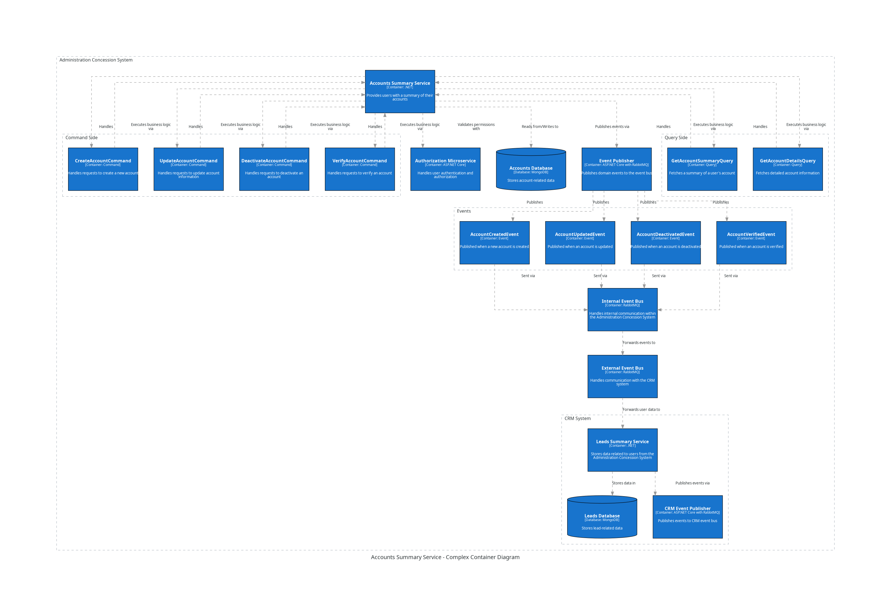

CRM System Accounts Summary Service¶
The Accounts Summary Service is an integral component of the CRM System, designed to manage and provide a summary of CRM user accounts. This service facilitates various operations related to accounts, including creation, updates, permissions updates, deactivation, and verification. It also supports queries for retrieving account summaries and detailed account information. The permission synchronization will hapeent through the permission service: after user with the corresponding permission will create the pecific user role with the specific permission assignt the permissions set and the role to the specific user the corresponding repository in the studnet service will be udpated do to inbox event from permission service. This optimisation is required for the not biased http request. However, in this case, the one more problem appears: for the moment the service with permissions is not available there will not be possible to provide any permission update for the specific role. For this time to situation when the new user has been created accured after the Permission Service will be available there should be a check available and additional outbox evnet publiching for such sort of situations. Theoretically, also thie situation should be in qute informative way described in the Permission service of the Administration Concesstion system.
API Documentation¶
Commands¶
CreateAccountCommand
Description: Handles the creation of a new user account within the system.
Request URL: /api/accounts/create
Method: POST
Request Body: - userId (string, required): Unique identifier for the user. - accountDetails (object, required): Detailed information about the account (e.g., email, name, etc.).
Response: - accountId (string): The ID of the newly created account. - message (string): Confirmation that the account has been created.
Events Triggered: AccountCreatedEvent
UpdateAccountCommand
Description: Handles updates to an existing user account’s information.
Request URL: /api/accounts/update
Method: PUT
Request Body: - accountId (string, required): The ID of the account to be updated. - updatedDetails (object, required): Updated account information (e.g., new email, name changes, etc.).
Response: - message (string): Confirmation that the account has been updated.
Events Triggered: AccountUpdatedEvent
DeactivateAccountCommand
Description: Handles the deactivation of an existing user account.
Request URL: /api/accounts/deactivate
Method: POST
Request Body: - accountId (string, required): The ID of the account to be deactivated. - reason (string, optional): Reason for deactivation.
Response: - message (string): Confirmation that the account has been deactivated.
Events Triggered: AccountDeactivatedEvent
VerifyAccountCommand
Description: Handles the verification process of a user account.
Request URL: /api/accounts/verify
Method: POST
Request Body: - accountId (string, required): The ID of the account to be verified. - verificationDetails (object, required): Details required for verification (e.g., verification code).
Response: - message (string): Confirmation that the account has been verified.
Events Triggered: AccountVerifiedEvent
Queries¶
GetAccountSummaryQuery
Description: Retrieves a summary of a user account.
Request URL: /api/accounts/summary
Method: GET
Request Parameters: - accountId (string, required): The ID of the account for which the summary is requested.
Response: - accountId (string): The ID of the account. - summary (object): A brief summary of the account, including key details (e.g., account status, creation date).
Events Triggered: None
GetAccountDetailsQuery
Description: Fetches detailed information about a user account.
Request URL: /api/accounts/details
Method: GET
Request Parameters: - accountId (string, required): The ID of the account for which details are requested.
Response: - accountId (string): The ID of the account. - details (object): Detailed information about the account, including all associated data (e.g., user profile, activity log).
Events Triggered: None
Inbox Events¶
The Accounts Summary Service processes the following inbox events:
AccountCreatedEvent
Description: Emitted after a new account is successfully created.
Source: CRM Authorization Service
Actions: Notifies the system that a new account has been created, triggering further actions in other services (e.g., Concession Onboarding).
UserLoggedOutEvent
Description: An event that triggers when a user logs out of the system.
Source: Authorization Service
Actions: Updates the account summary to reflect the user’s last logout time.
PasswordResetEvent
Description: An event that triggers when a user’s password is reset.
Source: CRM Authorization Service
Actions: Updates the account summary with information about the password reset, including the timestamp and fingerprints any relevant security notes.
TwoFactorAuthenticationMethodEnabledEvent
Description: An event that triggers when a users sets his 2fa to be anabled.
Source: CRM Authorization Service
Actions: Updates the account summary with information about the 2fa method enabled for the user permission verification, including the timestamps and fingerprints. Also, thie event mey be believed to be redundant, as the infomration about the 2fa verificaition will also be available in the Claims generated from token.
UserAssignedToPermissionsSetEvent/UserAssignedToRoleEvent
Description: And event from the Permission service in the case any manipulation with the user permission service happens.
Source: CRM Permission Service
Actions: Updates the account summary with information about the specific set of rht user’s permissions, including the timestamp and any relevant security notes. This is crutial for the query of Getting the User Entity with the speicific set of permission user have assigned, which will be updated be the message recieved from Permissions Service. to provide an optimistaion level for the Accounts Summary service in CRM system.
Outbox Events¶
The Accounts Summary Service emits the following outbox events:
AccountUpdatedEvent
Description: Emitted after an account is successfully updated in comparisson to the previous account data.
Destination: CRM Event Bus, CRM event Bus, CRM System Leads summary service
Actions: Notifies the system of the account update, ensuring all related services have the most current account information.
AccountDeactivatedEvent
Description: Emitted after an account is deactivated.
Destination: CRM Event Bus, CRM System Leads summary service
Actions: Notifies the system and associated services that the account has been deactivated, triggering any necessary follow-up actions.
AccountVerifiedEvent
Description: Emitted after an account is verified.
Destination: CRM Event Bus, CRM System
Actions: Notifies the Concessions System and CRM that the account has been verified, updating the status across all relevant services.